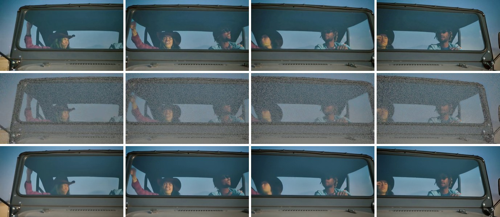
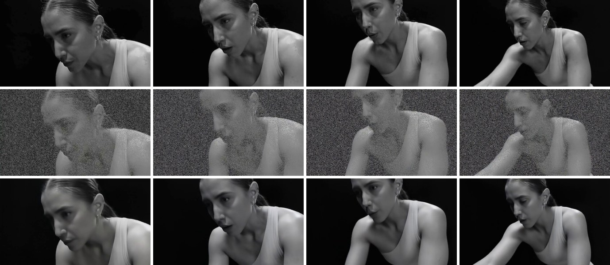

INFERENCE WALKTHROUGH / NOT A REPRODUCTION
一步学生确实快，
但公开权重只对应 Wan-VAE。
只跑 inpainting（mask 0.5）：自建两段 81 帧 832×480 的 LMDB，重建 PSNR 31.48 / 33.64 dB，掩膜区误差与未遮区同量级，时间一致度几乎等于 GT。换 LeanVAE 只换解码器，e2e 从 7.1 升到 34.8 FPS，与论文 >35 FPS 量级一致。SR×4 没有跑（官方 predegraded LMDB 只公开了 lock.mdb），并且作者 Drive 上平铺的三个 ckpt 是 Wan-VAE 版，LeanVAE 版的画质数字无法用公开权重验证。
跑了什么
仓库 ai4imaging/InstantViR @ d2b0416，入口 minimal_inference/autoregressive_inverse_inference.py。权重：Wan2.1-T2V-1.3B 全套（17.1 GB，ModelScope，sha256 与 HF LFS 一致）、LeanVAE-dim16.ckpt（152 MB）、作者的蒸馏权重 wan_causal_inverse_inpainting_model.pt（5.3 GB，内含 generator 825 个 bf16 张量 + critic）。
数据：官方 predegraded LMDB 不可得（sr4_predegraded_merged.lmdb 与 inpainting_leanvae_merged.lmdb 只有 8 KB 的 lock.mdb；可用的两个 LMDB 各 48–53 GB，超出预算，不下载）。改用仓库自带演示视频 + 官方 instantvir/scripts/create_degraded_dataset.py（frames 模式）自建两段 81 帧 832×480 的 mask0.5 LMDB：inpainting GT 014 与 deblur GT 012，latent 形状 (1,21,16,60,104)。推理单步 t=522、num_frame_per_block=3 → 7 个 block，KV cache 5.62 GB。
环境与改动
conda 前缀环境 env/（python 3.10.22），torch 2.5.1+cu124 / torchvision 0.20.1 / numpy 1.26.4 / diffusers 0.31.0 / transformers 4.46.3 / flash-attn 2.7.4.post1（cross-attn 硬 assert FLASH_ATTN_2_AVAILABLE）/ pytorch-lightning / timm / lpips / beartype / PyWavelets / decord / omegaconf / lmdb / easydict / einops / imageio+ffmpeg。仓库没有 requirements.txt，依赖从 import 反推，用 PYTHONPATH=. 从仓库根目录跑。
改动两处：① code/wan_models → ../ckpt/wan_models 软链（源码路径写死）；② 推理脚本算完 prompt embedding 后把冻结的 T5 移到 CPU 并 empty_cache()，为 480p Wan-VAE 解码腾 ~11 GB（不改算法/超参）。另加 --infer_dtype bf16（脚本自带选项；fp32 在 24 GB 卡上放不下 T5+DiT）。instantvir/ 下模型/训练代码未动。
结果
| 视频 | PSNR 重建 vs GT | PSNR 退化上采样 | SSIM 重建 | SSIM 退化 | 相邻帧差（重建 vs GT） |
|---|---|---|---|---|---|
| inpainting GT 014 | 31.48 | 17.03 | 0.9548 | 0.4188 | 0.0179 vs 0.0187 |
| deblur GT 012 | 33.64 | 12.44 | 0.9268 | 0.1825 | 0.0211 vs 0.0213 |
指标从 8-bit mp4 反算（eval_mp4.py），不等同论文 float 口径；论文表是 Open-Sora 500 段 + REDS 的 FVD/PSNR/SSIM/LPIPS。
速度（832×480、81 帧、4090 D、bf16）：Wan VAE 解码 4.86 s → e2e 7.1 FPS；换成 LeanVAE 解码 0.18 s → e2e 34.8 FPS（主干稳定 43 FPS，瓶颈完全在解码器）。显存 bf16 峰值 19.42 GB alloc / 19.49 GB reserv，24 GB 够用但很紧；fp32 直接 OOM。
关键发现：用 LeanVAE 配置 + LeanVAE LMDB 跑同一份 ckpt 只有 10.72 dB（比退化输入 15.99 还差，典型潜空间不匹配），换回 Wan VAE 配置后 31.48 dB；结合命名与空的 LeanVAE run 目录判断，公开的三个平铺 ckpt 是 Wan-VAE 版。
样例


没跑的部分与局限
- SR×4 没跑：官方 predegraded LMDB 的
data.mdb未公开；自建 SR LMDB 需要 Wan VAE 重编码与 DAVIS Resizer（baseline/diffusion-posterior-sampling未随仓库提供），未继续。 - 没有 LeanVAE 版画质：作者未公开 LeanVAE 学生权重，只测了解码速度；论文 Table 2 的 † 行（SR 27.04 dB）无法本地验证。
- 文本条件无语义：frames 模式自动生成占位 prompt
FRAMES_<dirname>，文本引导重建未验证。 - 不是论文评测集：两段作者演示视频，81 帧、832×480，8-bit mp4 反算；没有 Open-Sora 500 段与 REDS 的 FVD。
文件位置
| 路径 | 内容 |
|---|---|
/data1/kxchen/infer-repro/instantvir/code | 官方代码 @ d2b0416 |
.../ckpt/distilled_inpainting/model.pt | 蒸馏权重（5.3 GB） |
.../ckpt/wan_models/Wan2.1-T2V-1.3B | 教师全套权重（17.1 GB） |
.../data/inpainting_wan_mask0p5_{014,012}.lmdb | 自建 LMDB（各 8.8 MB） |
.../out/infer_inpainting_wan_bf16{,_v012}/ | original / degraded / reconstructed mp4 |
.../RECORD.md | 完整走查记录与数字出处 |
来源
- InstantViR 论文（arXiv:2511.14208，CVPR 2026）与官方仓库。
- 权重：Wan2.1-T2V-1.3B（ModelScope）、LeanVAE（HF Yumic/LeanVAE）、作者 Google Drive 的蒸馏 ckpt。
- 本页数字全部来自
/data1/kxchen/infer-repro/instantvir/RECORD.md与eval_mp4.py。 - 明确声明：小样本推理走查，不等同论文指标。